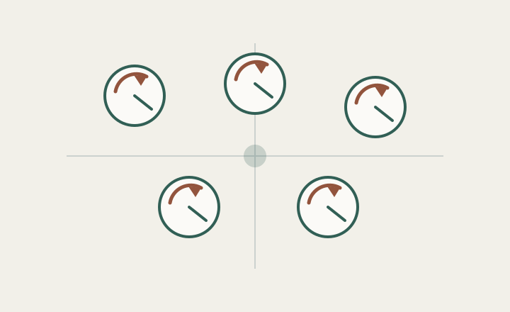
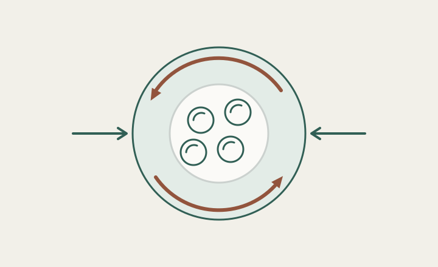
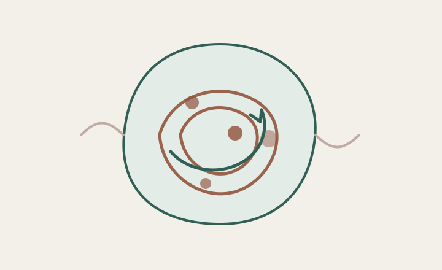
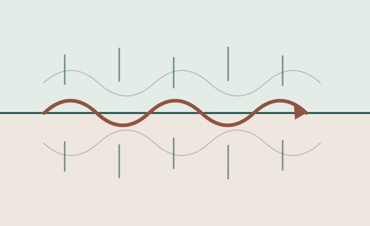

Current and recent work
Research projects
Lines of research spanning chiral fluids, collective dynamics, active matter, and electronic transport.
Select a project to read more.
Surface dynamics in odd fluids
Odd viscosity changes how a fluid transmits stress without adding dissipation, giving free surfaces a handed response. I study this physics in two complementary settings: capillary waves on extended interfaces and the oscillations of finite droplets. Theory and numerical simulations reveal how chirality separates counter-propagating modes, redistributes angular momentum, and alters nonlinear wave interactions.
Synchronisation and phase transitions in rotary microswimmers
Rotary microswimmers turn internal cyclic motion into interactions with their neighbours. Inspired by the flagellar dynamics of Chlamydomonas, this project explores when many such oscillators synchronise and how collective polar, nematic, or chiral phases emerge. Generalised XY and Kuramoto-type models connect microscopic couplings to phase transitions, defects, and large-scale order.

Angular-momentum transport in odd fluids
Chiral fluids possess internal rotational degrees of freedom, so angular momentum can move between microscopic spin, orbital flow, and the surrounding medium. I develop continuum and kinetic descriptions of this exchange, including micropolar stresses, couple stresses, and physically consistent boundary conditions. The aim is to identify observable signatures in confined flows, interfaces, and waves.

Chemo-rheology of active droplets
Active droplets combine internally generated stresses with chemical reactions that may themselves oscillate. This project studies the feedback loop between chemical state, active stress, flow, and droplet shape: how chemical rhythms reshape the effective rheology and how mechanics, in turn, reorganises those rhythms. Reduced models and simulations expose the onset of oscillatory, symmetry-breaking, and self-organised states.

Topological interfacial modes in electron hydrodynamics
Interfaces between electron fluids can guide collective modes whose propagation depends on broken symmetries, material contrasts, and boundary conditions. This project asks when those modes become localised and directional, and how robust they remain in the presence of dissipation and imperfections. It builds a bridge between electronic hydrodynamics, plasmonics, and topological wave physics.
